the flu shot notes file in my clinic docs folder has the raw details for our saturday walk-in day. turn it into a one page patient handout in writer - title, a short intro line, then the times and locations as a proper table, and the eligibility bits as a bullet list. also look up the cdc flu vaccine page and add one sentence from it about who should get vaccinated, with the url underneath. save the handout as a pdf in the same folder and show me the folder listing in a terminal after
THINKINGI need to plan this task:
1. Read the source data (visible on screen, but let me get exact details)
2. Look up the CDC flu vaccine page to get a sentence about who should get vaccinated + URL
3. Create a handout in Writer with title, intro line, table for times/locations, bullet list for eligibility
4. Add CDC sentence + URL
5. Save as PDF in same folder
6. Show folder listing in terminal
First, I need to find where the file is located (the clinic docs folder). Let me open a terminal to find the file location and read the raw content precisely. Let me use the terminal app in the taskbar.
Let me start by opening a terminal to locate the file. I'll click the terminal icon in the left dock.
ACTIONI can see the source notes are open. Let me first open a terminal to locate the file's folder so I can save the PDF in the same place.
EXECUTED (pyautogui in VM)pyautogui.press("return")
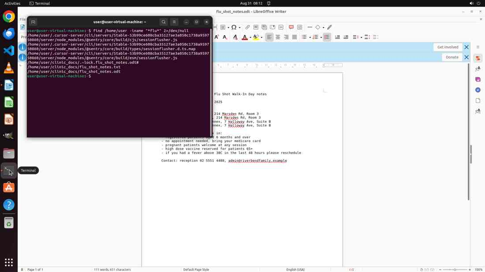
step 5 00:12:40
THINKINGThe file is at /home/user/clinic_docs/flu_shot_notes.odt (and a .txt version exists too). Let me read the txt version to get the exact raw text details.
ACTIONThe file is at `/home/user/clinic_docs/`. Let me read the raw text version to get the exact details.
EXECUTED (pyautogui in VM)pyautogui.press("return")
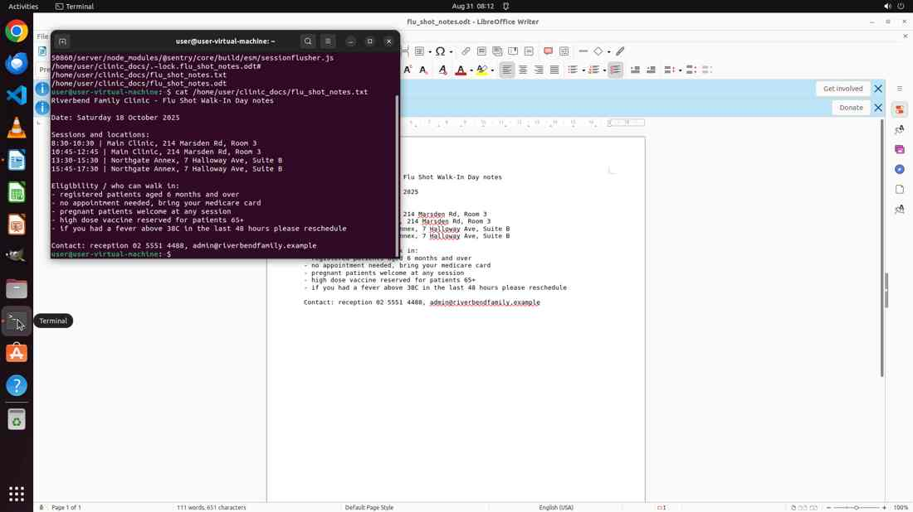
step 7 00:13:13
THINKINGNow I have the exact raw content:
Riverbend Family Clinic - Flu Shot Walk-In Day notes
Date: Saturday 18 October 2025
Sessions and locations:
8:30-10:30 | Main Clinic, 214 Marsden Rd, Room 3
10:45-12:45 | Main Clinic, 214 Marsden Rd, Room 3
13:30-15:30 | Northgate Annex, 7 Holloway Ave, Suite B
15:45-17:30 | Northgate Annex, 7 Holloway Ave, Suite B
Eligibility / who can walk in:
- registered patients aged 6 months and over
- no appointment needed, bring your medicare card
- pregnant patients welcome at any session
- high dose vaccine reserved for patients 65+
- if you had a fever above 38C in the last 48 hours please reschedule
Contact: reception 02 5551 4488, admin@riverbendfamily.example
Now I need to look up the CDC flu vaccine page for a sentence about who should get vaccinated, plus URL. The CDC flu vaccine page is at https://www.cdc.gov/flu/index.html or https://www.cdc.gov/flu/vaccines-basics/index.html. The CDC says: "CDC recommends that everyone 6 months and older get a flu vaccine every year." That's the standard recommendation. The relevant URL: https://www.cdc.gov/flu/vaccines-basics/who-to-vaccinate.html or the main flu page.
Let me verify by visiting the CDC page in the browser. The task says "look up the cdc flu vaccine page" - I should actually look it up to get a genuine sentence. Let me open Chrome. But this requires internet access which should be available. Let me open Chrome and navigate to the CDC flu page.
Actually, let me be efficient. I'll open Chrome, go to the CDC flu vaccine page, find the recommendation sentence. Let me open Chrome.
ACTIONI now have all the raw details. Next, I need to look up the CDC flu vaccine page for a genuine sentence about who should get vaccinated. Let me open Chrome.
THINKINGChrome is open. Let me navigate to the CDC flu vaccine page. The main CDC flu vaccine page is at https://www.cdc.gov/flu/vaccines-basics/index.html. Let me type that URL.
ACTIONChrome is open. Let me navigate to the CDC flu vaccine page.
EXECUTED (pyautogui in VM)pyautogui.typewrite("https://www.cdc.gov/flu/vaccines-basics/index.html")
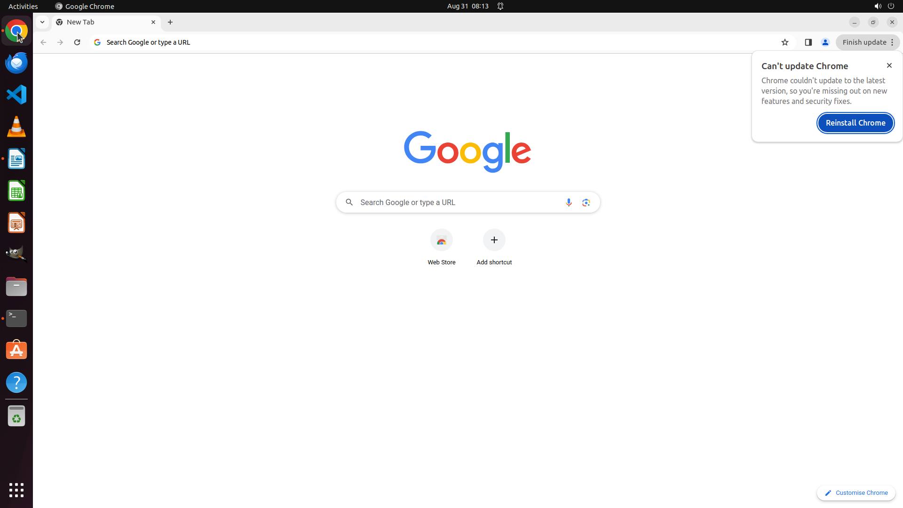
step 9 00:13:32
THINKINGThe address bar still shows "Search Google or type a URL" - my typing may not have registered in the address bar. There's a "Can't update Chrome" popup. Let me dismiss it and click the address bar first, then type.
ACTIONThe URL didn't register in the address bar. Let me dismiss the popup, click the address bar, and type the URL.
EXECUTED (pyautogui in VM)pyautogui.typewrite("https://www.cdc.gov/flu/vaccines-basics/index.html")
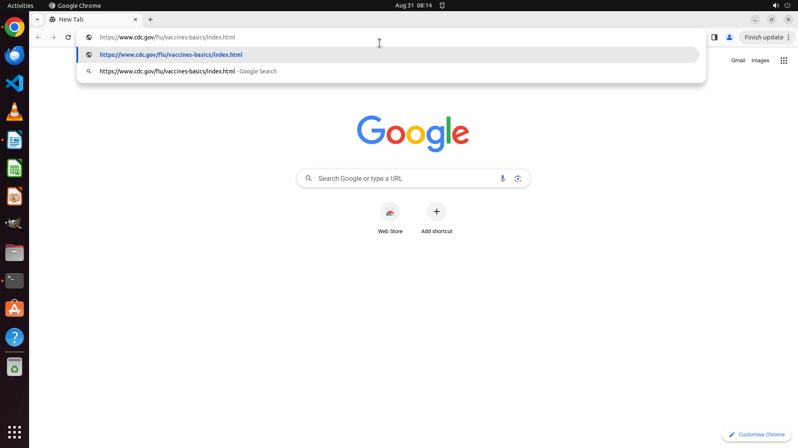
step 12 00:14:12
THINKINGThe URL is typed and the dropdown shows the URL. The Enter from my type may have been consumed by the dropdown. Let me press Enter to navigate.
EXECUTED (pyautogui in VM)pyautogui.press("return")
step 13 00:14:26
THINKINGThe CDC website is reachable but this specific URL is a 404. Let me use the on-page search to find the flu vaccine page. Let me search for "flu vaccine" in the CDC search box.
ACTIONThe page is a 404, but I'm on cdc.gov. Let me use the site search to find the flu vaccine page.
EXECUTED (pyautogui in VM)pyautogui.click(707, 576)
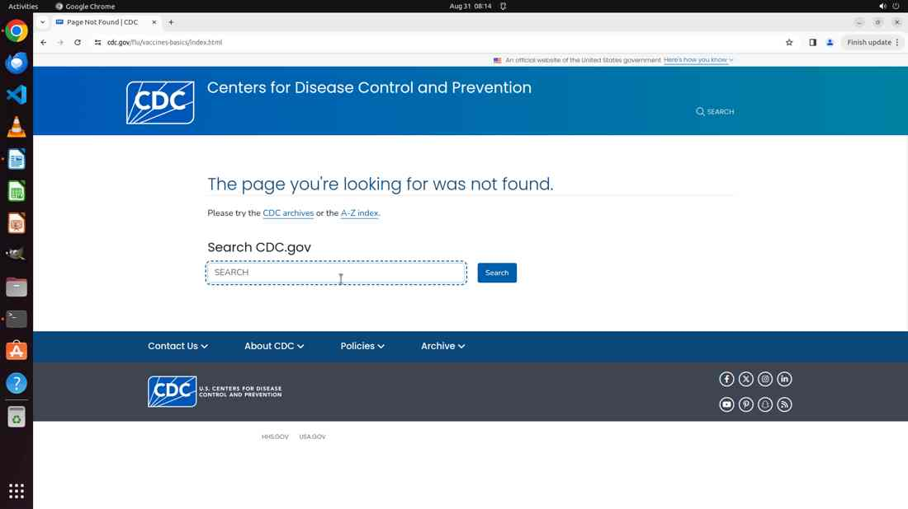
step 14 00:14:35
THINKINGLet me type "flu vaccine who should get vaccinated" and search. Actually, better to navigate directly to the CDC flu main page. Let me try the search first with "flu vaccine".
EXECUTED (pyautogui in VM)pyautogui.click(1049, 576)
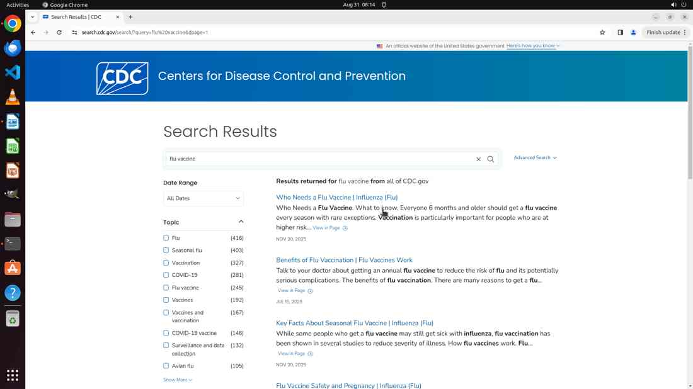
step 16 00:15:02
THINKINGThe top result "Who Needs a Flu Vaccine | Influenza (Flu)" is exactly the CDC flu vaccine page about who should get vaccinated. The snippet already shows: "Who Needs a Flu Vaccine. What to know. Everyone 6 months and older should get a flu vaccine every season with rare exceptions."
Let me open that page to get the exact sentence and URL.
ACTIONThe top result "Who Needs a Flu Vaccine" is exactly what I need. Let me open it to get the exact sentence and its URL.
EXECUTED (pyautogui in VM)pyautogui.click(932, 547)
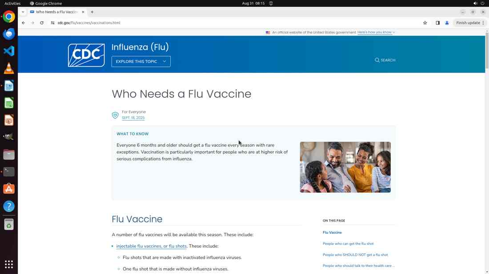
step 17 00:15:24
THINKINGI found the CDC flu vaccine page: "Who Needs a Flu Vaccine" at URL https://cdc.gov/flu/vaccines/vaccinations.html
The "WHAT TO KNOW" box says: "Everyone 6 months and older should get a flu vaccine every season with rare exceptions. Vaccination is particularly important for people who are at higher risk of serious complications from influenza."
This is a perfect sentence about who should get vaccinated. I'll use:
"Everyone 6 months and older should get a flu vaccine every season with rare exceptions."
URL: https://cdc.gov/flu/vaccines/vaccinations.html
Now I have all the content I need:
- Title: "Flu Shot Walk-In Day" (patient handout)
- Intro line: A short intro
- Table of times and locations (4 rows)
- Bullet list of eligibility bits
- CDC sentence + URL
Now let me switch to LibreOffice Writer. The handout should be created as a new document (a patient handout), saved as PDF in /home/user/clinic_docs/.
The task says "save the handout as a pdf in the same folder". It says "turn it into a one page patient handout in writer". I'll create a new Writer document rather than editing the raw notes file, since it's a handout. Actually "turn it into" could imply editing the same doc, but a clean handout is better as a new document. The requirement is just that the PDF is saved in the same folder. I'll create a new document.
Let me switch to the LibreOffice Writer window. I'll use the taskbar/dock - the Writer icon is in the left dock. Actually, the existing notes document is already open in Writer. Let me create a new document. Let me click on the Writer icon in the dock to bring it up, then create a new document.
Let me take note of the exact content first:
TABLE:
Time | Location
8:30–10:30 | Main Clinic, 214 Marsden Rd, Room 3
10:45–12:45 | Main Clinic, 214 Marsden Rd, Room 3
13:30–15:30 | Northgate Annex, 7 Holloway Ave, Suite B
15:45–17:30 | Northgate Annex, 7 Holloway Ave, Suite B
BULLETS (eligibility):
- Registered patients aged 6 months and over
- No appointment needed — bring your Medicare card
- Pregnant patients welcome at any session
- High dose vaccine reserved for patients 65+
- If you had a fever above 38°C in the last 48 hours, please reschedule
CDC sentence: Everyone 6 months and older should get a flu vaccine every season with rare exceptions.
URL: https://cdc.gov/flu/vaccines/vaccinations.html
Now let me create the Writer document. Let me switch to the Writer window via the dock.
ACTIONI have everything I need from the CDC page:
- **Sentence:** "Everyone 6 months and older should get a flu vaccine every season with rare exceptions."
- **URL:** https://cdc.gov/flu/vaccines/vaccinations.html
Now let me switch to LibreOffice Writer to build the handout. I'll create a new document.
EXECUTED (pyautogui in VM)pyautogui.click(32, 335)
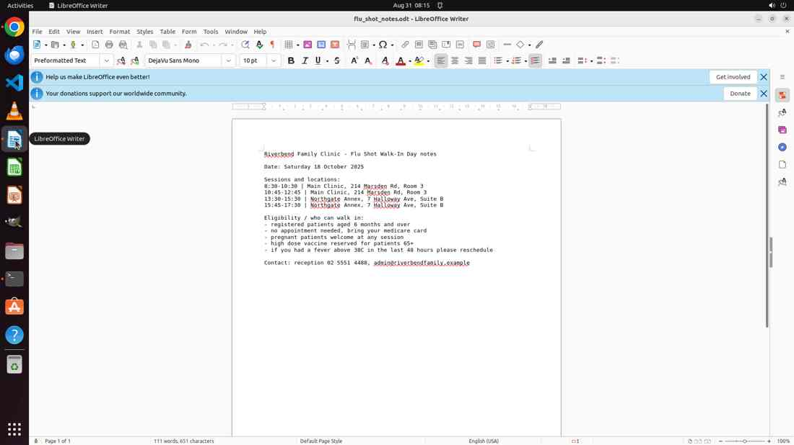
step 18 00:15:39
THINKINGNow I can see the full raw notes clearly in Writer. Let me confirm the exact details:
Riverbend Family Clinic - Flu Shot Walk-In Day notes
Date: Saturday 18 October 2025
Sessions and locations:
8:30-10:30 | Main Clinic, 214 Marsden Rd, Room 3
10:45-12:45 | Main Clinic, 214 Marsden Rd, Room 3
13:30-15:30 | Northgate Annex, 7 Holloway Ave, Suite B
15:45-17:30 | Northgate Annex, 7 Holloway Ave, Suite B
Eligibility / who can walk in:
- registered patients aged 6 months and over
- no appointment needed, bring your medicare card
- pregnant patients welcome at any session
- high dose vaccine reserved for patients 65+
- if you had a fever above 38C in the last 48 hours please reschedule
Contact: reception 02 5551 4488, admin@riverbendfamily.example
Now I'll create a new blank Writer document for the handout. Let me use File > New > Text Document. I'll close the info bars first, then create a new doc.
Let me create a new document via Ctrl+N.
ACTIONNow I have all the confirmed details. Let me create a new blank document for the handout with Ctrl+N.
EXECUTED (pyautogui in VM)pyautogui.hotkey("ctrl", "n")
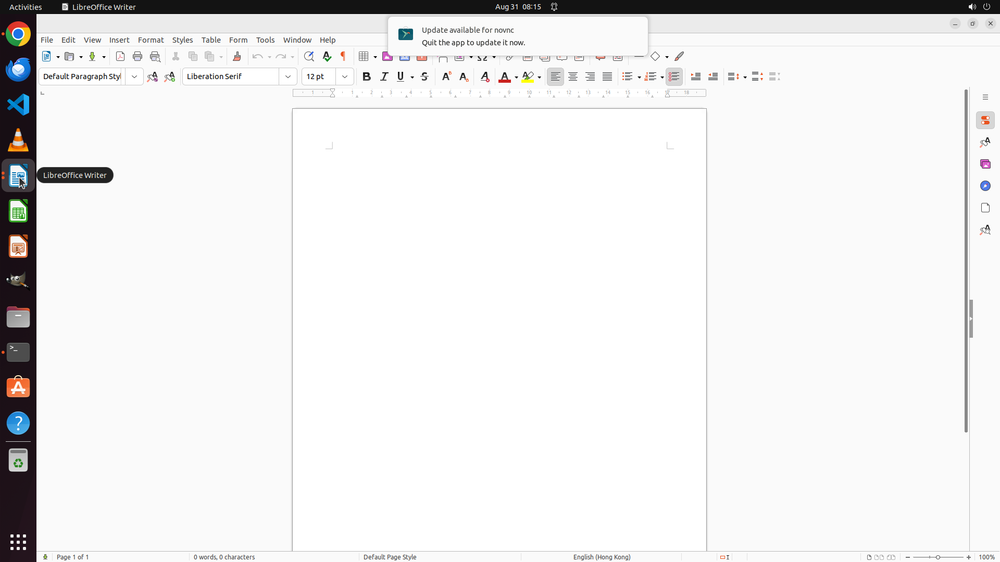
step 19 00:15:52
THINKINGA new blank document is created. There's an "Update available for novnc" notification popup at the top - I'll ignore it as it's unrelated.
Now I'll build the handout. Let me click into the document body first to place the cursor, then type the title. I'll use the "Title" paragraph style for the title, "Default Paragraph Style" for the intro, etc.
My plan:
1. Click in the document body.
2. Set style to "Title", type "Flu Shot Walk-In Day".
3. Enter, set style to "Default Paragraph Style", type intro line.
4. Enter, add the table. I'll insert a table via Table menu (2 columns, 5 rows including header).
5. Fill in table.
6. After table, add "Who can walk in" heading, then bullet list.
7. Add CDC sentence and URL.
This is a lot of steps. Let me be efficient. First click in the body and type the title with Title style.
Let me click into the document area near the top.
ACTIONA blank document is ready. Let me click into the document body and start with the title using the Title style.
EXECUTED (pyautogui in VM)pyautogui.click(899, 372)
step 20 00:16:05
THINKINGNow I'll set the paragraph style to "Title" for the title. I'll click into the paragraph style box, clear it, type "Title", and press Enter. Then type the title text.
Let me set the style via the style dropdown at top-left. I'll triple-click to select the text in the style box, type "Title", press Enter.
ACTIONNow let me set the Title style and type the title. I'll use the paragraph style box.
EXECUTED (pyautogui in VM)pyautogui.tripleClick(153, 144)
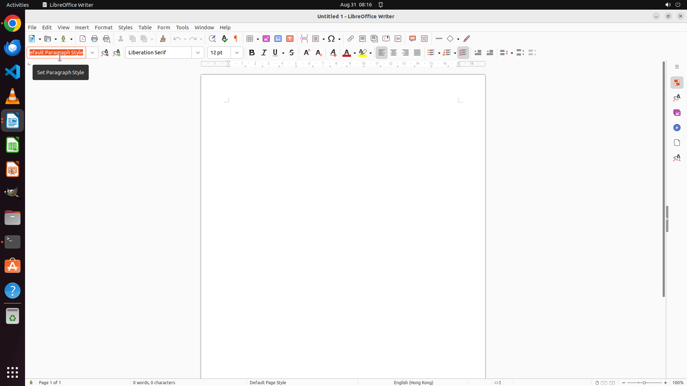
step 21 00:16:21
THINKINGThe style box text is selected. Now I'll type "Title" and press Enter to apply the Title style.
TOOL CALL<tool_call>
<function=computer_use>
<parameter=action>
type
</parameter>
<parameter=text>
Title
</parameter>
</function>
</tool_call>
EXECUTED (pyautogui in VM)pyautogui.typewrite("Title")
step 22 00:16:37
THINKINGThe style box now shows "Title" but the Enter didn't apply it to the document — the style box still has focus showing "Title|" with cursor. It seems the newline in my type may have just been consumed but focus is still on the style box. Actually the font still shows Liberation Serif 12pt, and the document cursor wasn't clearly in the body.
Wait, the style box shows "Title|" with a cursor, meaning it's still in edit mode. The Enter didn't commit. Let me press Enter explicitly to commit the Title style.
ACTIONThe style box still shows "Title" in edit mode. Let me press Enter to apply it.
EXECUTED (pyautogui in VM)pyautogui.press("return")
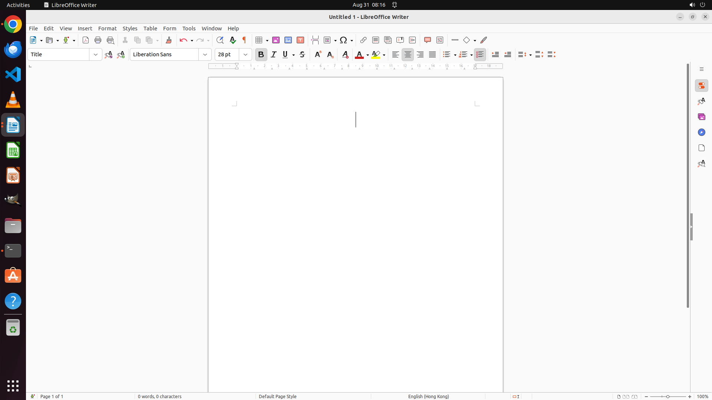
step 23 00:16:49
THINKINGThe Title style is now applied - the style box shows "Title", font is Liberation Sans 28pt, bold, centered. The cursor is in the document body. Now I'll type the title text, then Enter and set the next paragraph to a body style.
I'll type the title, then Enter. After a Title paragraph, pressing Enter usually goes to "Text Body" or "Default Paragraph Style". I'll set it explicitly.
Let me type the title now.
ACTIONThe Title style is applied. Now let me type the title text.
TOOL CALL<tool_call>
<function=computer_use>
<parameter=action>
type
</parameter>
<parameter=text>
Flu Shot Walk-In Day
</parameter>
</function>
</tool_call>
EXECUTED (pyautogui in VM)pyautogui.typewrite("Flu Shot Walk-In Day")
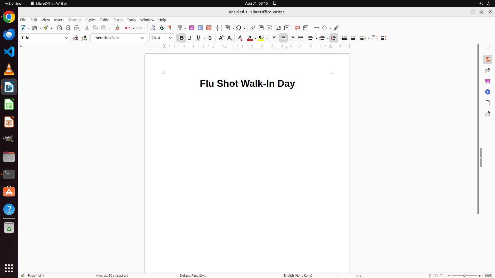
step 24 00:17:04
THINKINGTitle is in. Now I'll press Enter to create a new paragraph, set it to "Default Paragraph Style", and type the intro line. Then another Enter for a "Subtitle"-like heading? The task wants: title, intro line, then table (times/locations), then bullet list (eligibility), plus CDC sentence + URL.
Let me structure:
- Title (done)
- Intro line (Default Paragraph Style)
- A heading "Sessions & Locations" (Heading 1) - optional but nice. The task doesn't require headings but they help organization. I'll keep it clean with a small heading. Actually to keep to one page and match requirements, I'll add "Sessions & Locations" heading before the table, and "Who Can Walk In" heading before bullets. That's fine.
- Table
- "Who Can Walk In" heading
- Bullet list
- CDC sentence + URL (maybe under a "From the CDC" heading)
Let me proceed step by step. Press Enter, set style to Default Paragraph Style, type intro. I'll do the intro now.
ACTIONNow let me add the intro line. I'll press Enter and switch to a body style.
EXECUTED (pyautogui in VM)pyautogui.press("return")
step 25 00:17:19
THINKINGNow the style is "Text Body", left-aligned. Good. Let me type the intro line. I'll keep it short. Then Enter and add a "Sessions & Locations" heading.
Intro: "Riverbend Family Clinic is offering free flu shots on Saturday, 18 October 2025. No appointment needed — just walk in during one of the sessions below."
Wait, "free" isn't stated in the notes. I should not invent "free". Let me make an accurate intro: "Riverbend Family Clinic is offering flu vaccinations on Saturday, 18 October 2025. No appointment needed — just walk in during one of the sessions below."
That's accurate to the notes (no appointment needed is in the eligibility). Good.
ACTIONNow I'll type the intro line.
TOOL CALL<tool_call>
<function=computer_use>
<parameter=action>
type
</parameter>
<parameter=text>
Riverbend Family Clinic is offering flu vaccinations on Saturday, 18 October 2025. No appointment is needed — simply walk in during one of the sessions below.
</parameter>
</function>
</tool_call>
EXECUTED (pyautogui in VM)pyautogui.typewrite("Riverbend Family Clinic is offering flu vaccinations on Saturday, 18 October 2025. No appointment is needed — simply walk in during one of the sessions below.")
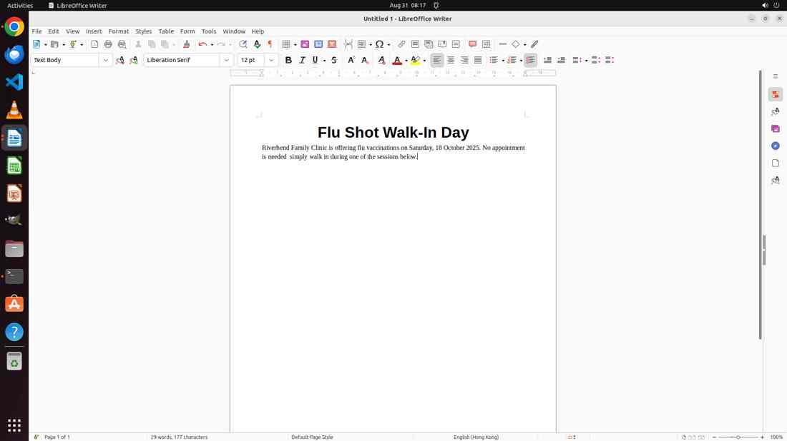
step 26 00:17:34
THINKINGThe intro shows "No appointment is needed simply walk in" — the em-dash "—" appears to have been dropped (there's a double space where it should be). The autocorrect may have removed it or the type didn't render the em-dash. It's minor, but let me fix it. Actually looking closely it says "needed simply" with a gap. The em-dash wasn't typed.
This is a cosmetic issue. Let me fix it to keep it clean. I'll click between the two spaces and retype. Actually, simpler: I'll just leave a comma. Let me select the intro line and retype it with a comma instead of em-dash to avoid issues. Actually let me just fix the dash by clicking there.
The gap is around x=790, y=240 ("needed simply"). Let me click right before "simply" to place cursor, then I need to fix. This is fiddly.
Alternative: select the whole intro paragraph and retype using a comma. Let me triple-click the intro to select it, then retype.
ACTIONThe em-dash didn't render. Let me select the intro line and retype it with a comma for reliability.
EXECUTED (pyautogui in VM)pyautogui.tripleClick(899, 368)
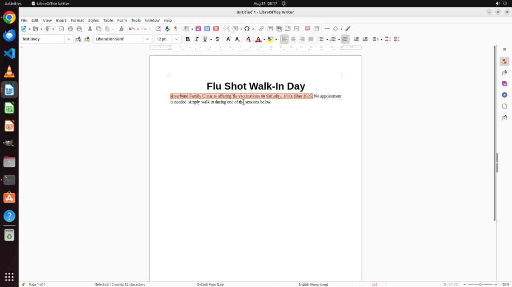
step 27 00:17:50
THINKINGTriple-click only selected the first line/portion (12 words, 82 characters) — it selected the first visual line, not the whole paragraph. It seems the whole paragraph is two lines. Let me instead select the whole paragraph. Actually the status says "Selected: 12 words, 82 characters" but the full intro is 29 words. Triple-click in Writer should select the whole paragraph. The highlighted region only shows the first line though.
Hmm, maybe triple-click selected only part. Let me just double-click approach differently — I'll select the whole paragraph with a click at start and shift+click at end. Simpler: click at the very start of the paragraph, then Shift+End won't cross lines.
Let me just retype the selected text and then handle the rest. Actually, let me re-do: I'll select from start of "Riverbend" to end of "below." using click + shift+click. The paragraph starts at x=428,y=240 and ends at x=682,y=258.
Let me click at start then shift-click at end.
ACTIONThe triple-click only selected part. Let me select the whole paragraph with a click and shift-click.
EXECUTED (pyautogui in VM)pyautogui.click(641, 360)
step 28.1 00:18:06
THINKINGI clicked at the start. Now let me shift+click at the end of "below." to select the whole paragraph. The end is after "below." at x=682, y=258.
EXECUTED (pyautogui in VM)pyautogui.keyDown("shift")
step 28.2 00:18:09
same model call as the previous action
EXECUTED (pyautogui in VM)pyautogui.click(1022, 384)
step 28.3 00:18:13
same model call as the previous action
EXECUTED (pyautogui in VM)pyautogui.keyUp("shift")
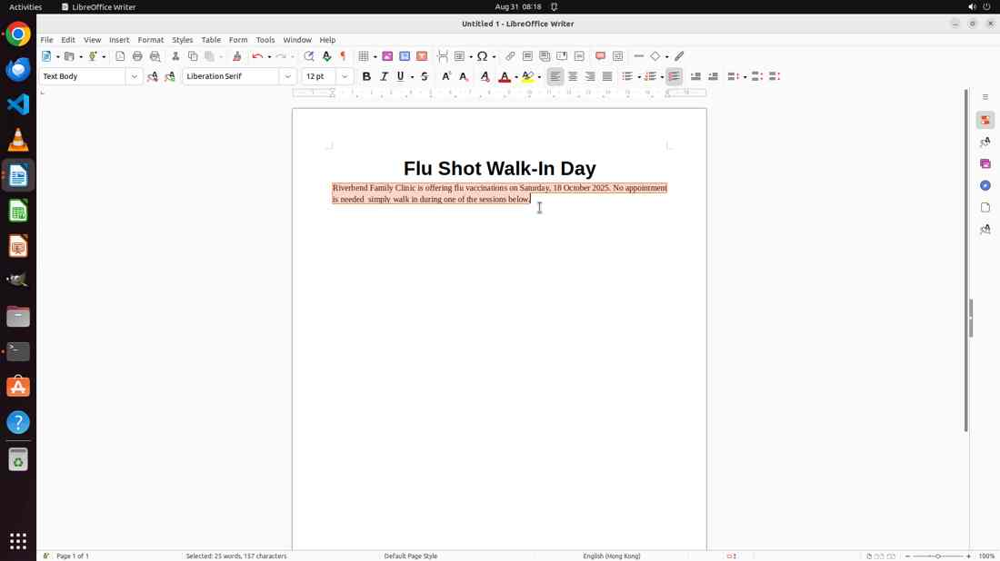
step 29 00:18:38
THINKINGNow the whole paragraph is selected (25 words, 157 characters — the 177 - 20 was the title). Let me type the replacement text. I'll use a comma to avoid the em-dash issue.
ACTIONThe whole paragraph is selected. Let me retype it with a comma.
TOOL CALL<tool_call>
<function=computer_use>
<parameter=action>
type
</parameter>
<parameter=text>
Riverbend Family Clinic is offering flu vaccinations on Saturday, 18 October 2025. No appointment is needed, so simply walk in during one of the sessions below.
</parameter>
</function>
</tool_call>
EXECUTED (pyautogui in VM)pyautogui.typewrite("Riverbend Family Clinic is offering flu vaccinations on Saturday, 18 October 2025. No appointment is needed, so simply walk in during one of the sessions below.")
step 30 00:18:55
THINKINGThe intro now reads cleanly. Now I'll add a heading "Sessions & Locations" then insert the table.
Let me press Enter to go to a new line, set style to "Heading 1" (or "Heading 2"), type the heading. Then Enter, set back to Text Body (or a small style), and insert the table.
Actually the table insertion: I'll press Enter after the heading, then use Table > Insert Table (Ctrl+F12), set 2 columns, 5 rows.
Let me proceed. Press Enter, set style to "Heading 2", type "Sessions & Locations".
Let me set the style. First press Enter.
ACTIONThe intro is clean now. Let me add a "Sessions & Locations" heading. I'll press Enter and apply Heading 2 style.
EXECUTED (pyautogui in VM)pyautogui.press("return")
step 31 00:19:05
THINKINGNew paragraph created, still Text Body. Now set style to "Heading 2". Let me use the style box: triple-click it, type "Heading 2", Enter. Then type the heading text.
ACTIONNow let me apply Heading 2 style and type the heading.
EXECUTED (pyautogui in VM)pyautogui.typewrite("Heading 2")
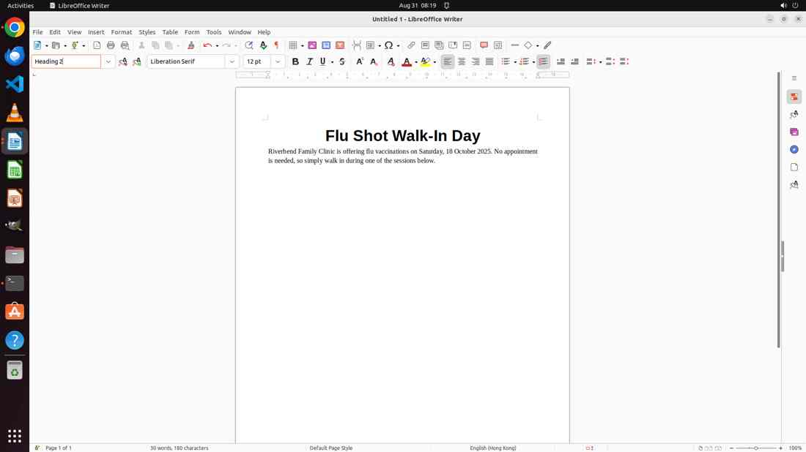
step 33 00:19:34
THINKINGThe style box now shows "Heading 2" but the document font still shows Liberation Serif 12pt, and the document body doesn't show the heading yet. The Enter may not have committed. Let me click into the document body first to ensure focus is in the document, then apply. Actually the style box still has "Heading 2" but it seems the paragraph in the document hasn't changed style (the cursor line below the intro isn't visible).
Wait - the newline in my type may have committed the style. But the font box still shows 12pt Liberation Serif. If Heading 2 were applied, the font would change. Let me press Enter to commit in the style box, then check.
Actually the issue: after triple-click the style box, I typed "Heading 2\n". The \n should have committed. But the display shows it not applied. Let me press Enter once more while the style box may still be focused.
Hmm, hard to tell. Let me just click in the document at the empty line after the intro (around y=277) and check the style box value.
ACTIONLet me press Enter to ensure the style commits, then verify.
EXECUTED (pyautogui in VM)pyautogui.press("return")
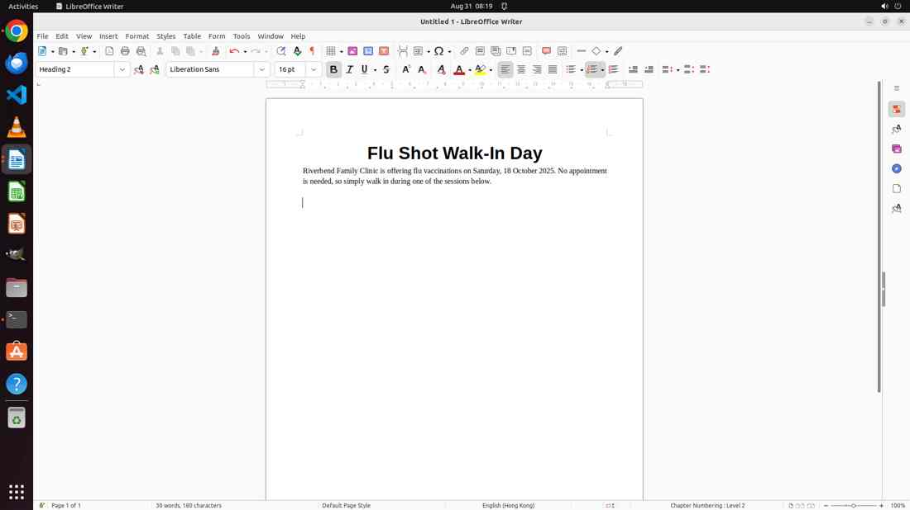
step 34 00:19:47
THINKINGNow the style is Heading 2 (font Liberation Sans 16pt, bold, blue). The cursor is at the empty line. Now let me type the heading text "Sessions & Locations". The "&" is a normal character, fine.
ACTIONHeading 2 is applied. Now let me type the heading text.
EXECUTED (pyautogui in VM)pyautogui.typewrite("Sessions & Locations")
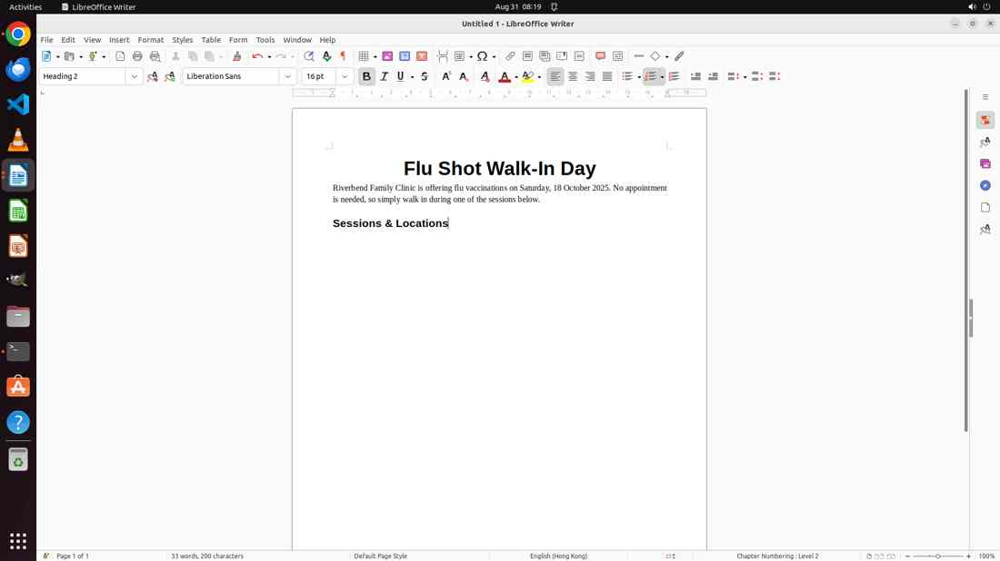
step 35 00:19:59
THINKINGHeading is in. Now I need to create a new line and insert a table. Let me press Enter (which creates a new paragraph after the heading; the style will likely become Text Body or Heading again — I'll set it to Default after). Then insert table via Table menu > Insert Table (Ctrl+F12).
Let me press Enter first.
ACTIONNow let me press Enter and insert a table with 2 columns and 5 rows.
EXECUTED (pyautogui in VM)pyautogui.hotkey("ctrl", "f12")
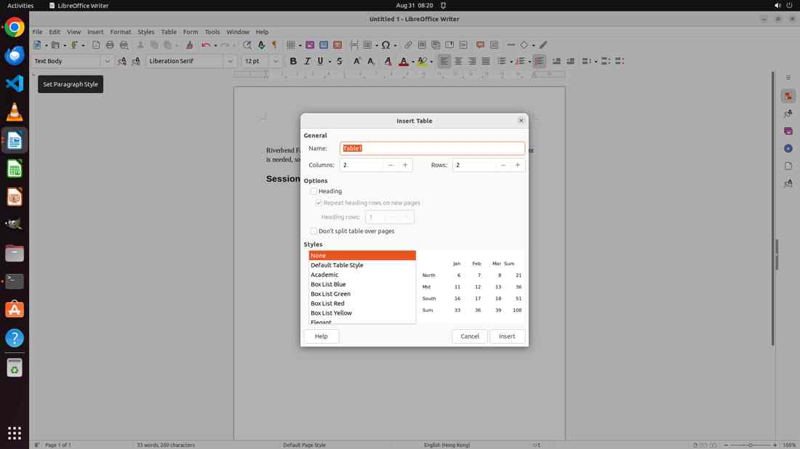
step 37 00:20:25
THINKINGThe Insert Table dialog is open. Columns = 2 (correct). Rows = 2, I need 5. Let me set Rows to 5. I'll triple-click the Rows field and type 5. Also I'll enable "Heading" so the first row is a header row (nice for a proper table). Let me check the Heading checkbox too.
Let me set Rows to 5 first.
ACTIONThe dialog is open with 2 columns. Let me set Rows to 5 and enable the Heading option.
EXECUTED (pyautogui in VM)pyautogui.tripleClick(1137, 394)
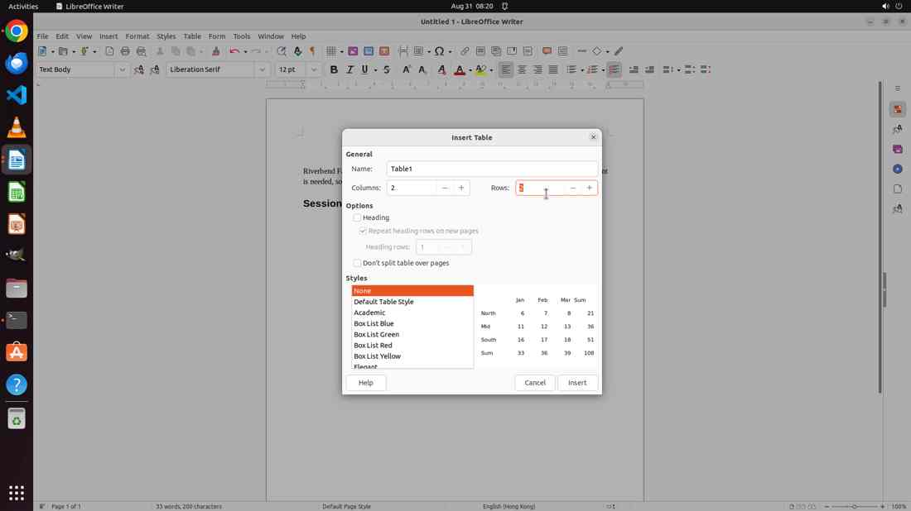
step 38 00:20:34
THINKINGThe Rows field is selected (shows "2" highlighted). Let me type 5, then enable the Heading checkbox, then choose a Default Table Style for nicer borders, then click Insert. Let me type 5 and check Heading. I'll batch: type 5, click Heading checkbox, click "Default Table Style". Then click Insert.
Actually let me be careful — after typing 5 the field should show 5. Then click Heading checkbox at (502, 306). Then select "Default Table Style" at (545, 424). Then Insert at (811, 539).
I'll batch these but verifying is better done after. Let me type 5 and check heading, then screenshot before insert to confirm style selection.
EXECUTED (pyautogui in VM)pyautogui.typewrite("5")
step 39 00:20:42
THINKINGRows now = 5. Now let me enable Heading and select "Default Table Style", then Insert. Let me click Heading checkbox, then "Default Table Style", then Insert.
ACTIONRows is set to 5. Let me enable the Heading option and select a table style, then insert.
EXECUTED (pyautogui in VM)pyautogui.click(1214, 806)
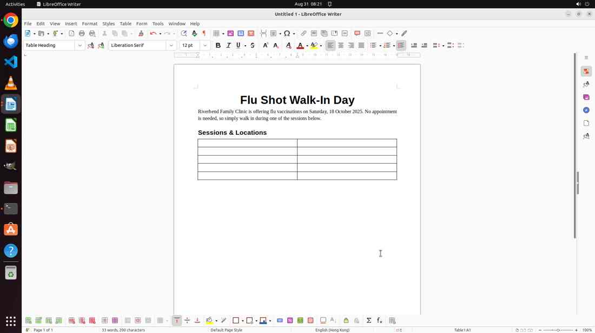
step 42 00:21:28
THINKINGThe table is inserted with 2 columns and 5 rows, and the cursor is in the first cell (Table1:A1, style "Table Heading"). Now I'll fill in the table. I'll type in the first cell the header "Time", then Tab to move to next cell, "Location", Tab, then the 4 data rows.
The cursor is in cell A1. I'll type the content, using Tab to move to the next cell. Tab moves right, and at end of a row wraps to next row's first cell.
Sequence:
A1: Time
Tab -> B1: Location
Tab -> A2: 8:30–10:30
Tab -> B2: Main Clinic, 214 Marsden Rd, Room 3
Tab -> A3: 10:45–12:45
Tab -> B3: Main Clinic, 214 Marsden Rd, Room 3
Tab -> A4: 13:30–15:30
Tab -> B4: Northgate Annex, 7 Holloway Ave, Suite B
Tab -> A5: 15:45–17:30
Tab -> B5: Northgate Annex, 7 Holloway Ave, Suite B
I'll type these. For the times, I'll use hyphen "-" instead of en-dash to avoid rendering issues. I'll type the whole sequence in one batch with type + key Tab. Actually I can't mix type and tab in a single "type" easily — I can, since type just sends the string. But Tab needs to be a key. Let me build a batch of alternating type and key actions.
Let me do it.
ACTIONThe table is inserted with the cursor in the first cell. Now let me fill in all the cells using Tab to move between them.
TOOL CALL<tool_call>
<function=computer_use>
<parameter=action>
type
</parameter>
<parameter=text>
Time
</parameter>
</function>
</tool_call>
EXECUTED (pyautogui in VM)pyautogui.typewrite("Time")
step 43 00:21:41
THINKING"Time" is in A1. Now let me fill the rest using Tab between cells. I'll batch the remaining entries: Tab, "Location", Tab, "8:30-10:30", Tab, "Main Clinic, 214 Marsden Rd, Room 3", Tab, "10:45-12:45", Tab, "Main Clinic, 214 Marsden Rd, Room 3", Tab, "13:30-15:30", Tab, "Northgate Annex, 7 Holloway Ave, Suite B", Tab, "15:45-17:30", Tab, "Northgate Annex, 7 Holloway Ave, Suite B".
I'll batch these as a sequence of key Tab and type actions.
ACTIONNow let me fill the rest of the table in one batch, using Tab to move between cells.
THINKINGNow in cell B1 (Table1:B1). Now I'll batch the rest: type "Location", Tab, then the data rows. Let me do the full remaining sequence in one batched call.
ACTIONNow in B1. Let me fill the remaining cells in one batch.
EXECUTED (pyautogui in VM)pyautogui.typewrite("Location")
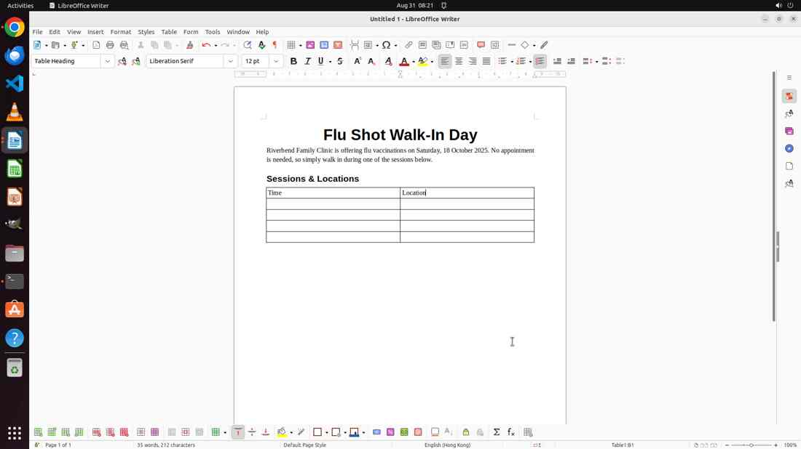
step 45 00:22:03
THINKINGHeader row done: Time | Location. Now I'll fill the 4 data rows. I'll batch: Tab, type A2, Tab, type B2, Tab, type A3, Tab, type B3, Tab, type A4, Tab, type B4, Tab, type A5, Tab, type B5.
Let me batch all these in a single tool call with alternating key and type actions.
ACTIONHeader row is done. Now let me fill all 4 data rows in one batch.
THINKINGNow in A2 (Table1:A2, style "Table Contents"). Now I'll type the data rows. I'll type A2 content, Tab, B2 content, Tab, A3, Tab, B3, Tab, A4, Tab, B4, Tab, A5, Tab, B5. Since type can include the text but Tab is a key, I'll batch these in one call.
ACTIONNow in A2. Let me fill the remaining data cells in one batch.
EXECUTED (pyautogui in VM)pyautogui.typewrite("8:30-10:30")
step 47 00:22:28
THINKINGA2 now has "8:30-10:30". Now let me fill the rest. I'll batch: Tab, B2 location, Tab, A3 time, Tab, B3 location, Tab, A4 time, Tab, B4 location, Tab, A5 time, Tab, B5 location. I'll do this in a single batched tool call with alternating key and type actions.
ACTIONNow let me fill the remaining cells (B2 through B5) in one batch.
THINKINGNow in B2. I'll type the location, then Tab through the rest. Let me batch the remaining sequence to be efficient:
- type "Main Clinic, 214 Marsden Rd, Room 3"
- Tab, type "10:45-12:45"
- Tab, type "Main Clinic, 214 Marsden Rd, Room 3"
- Tab, type "13:30-15:30"
- Tab, type "Northgate Annex, 7 Holloway Ave, Suite B"
- Tab, type "15:45-17:30"
- Tab, type "Northgate Annex, 7 Holloway Ave, Suite B"
I'll batch all of these.
ACTIONNow in B2. Let me type the rest of the table in one batch.
TOOL CALL<tool_call>
<function=computer_use>
<parameter=action>
type
</parameter>
<parameter=text>
Main Clinic, 214 Marsden Rd, Room 3
</parameter>
</function>
</tool_call>
EXECUTED (pyautogui in VM)pyautogui.typewrite("Main Clinic, 214 Marsden Rd, Room 3")
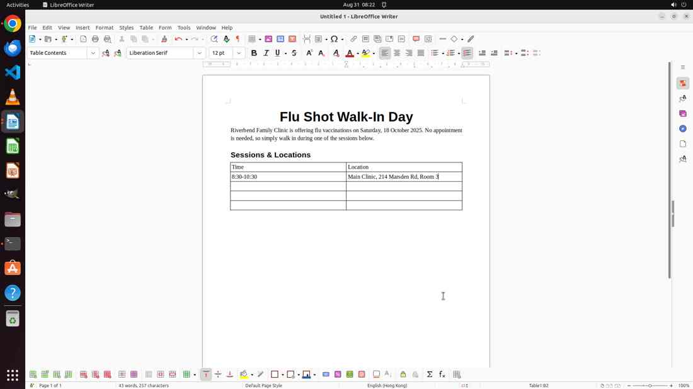
step 49 00:22:51
THINKINGB2 filled. Now I'll batch the remaining 6 cells: Tab + A3, Tab + B3, Tab + A4, Tab + B4, Tab + A5, Tab + B5. Let me do this in one batched call with alternating key/type.
ACTIONNow let me fill the final 6 cells in one batch.
THINKINGNow in A3. The pattern of type-then-tab is working reliably. Let me now type A3, then continue. I'll do them one at a time with type then Tab, but to save round-trips I'll do a type now (A3), then a Tab, then verify. Actually the reliable pattern is: each type works, each tab works. Let me just continue: type A3, then next call Tab, then type B3, etc. To reduce round trips, I'll type A3 now.